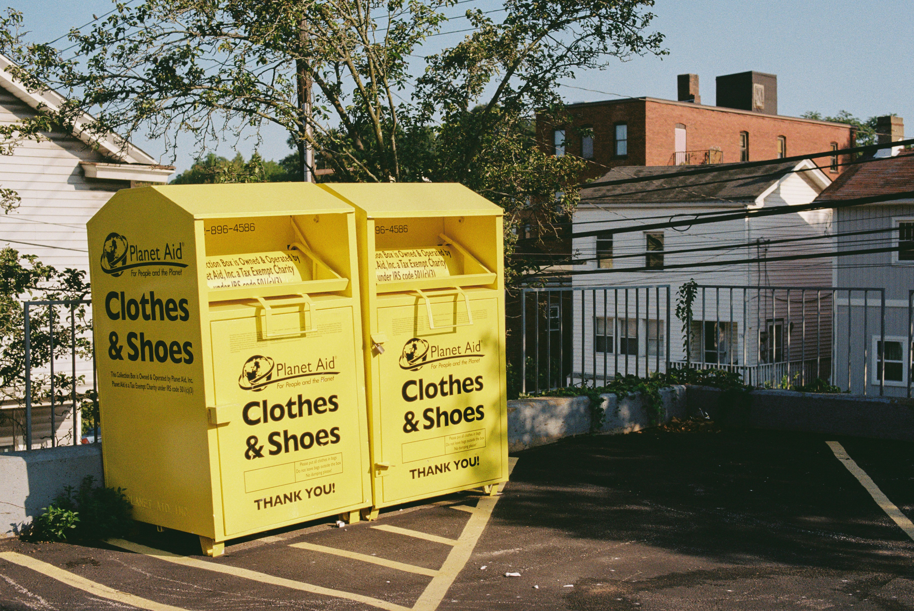

Kleidung spenden – Menschen in Krisengebieten unterstützen
Über dieses Portal können Sie Ihre Kleiderspende schnell und unkompliziert registrieren. Ziel ist es, den organisatorischen Ablauf zu vereinfachen und bedarfsgerechte Hilfe für Menschen in Krisengebieten zu ermöglichen.

So funktioniert das Portal
Die Registrierung Ihrer Kleiderspende erfolgt in wenigen Schritten.
1. Spende erfassen
Wählen Sie die Art der Kleidung sowie das gewünschte Krisengebiet aus und geben Sie an, wie die Übergabe erfolgen soll.
2. Übergabe festlegen
Entscheiden Sie, ob Sie die Spende selbst in der Geschäftsstelle abgeben oder eine Abholung durch das Sammelfahrzeug wünschen.
3. Bestätigung erhalten
Nach erfolgreicher Registrierung erhalten Sie eine Bestätigungsseite mit allen erfassten Angaben zu Ihrer Spende.
Ihre Vorteile
Das Portal wurde so gestaltet, dass die Registrierung möglichst einfach und benutzerfreundlich erfolgt.
Schnell
Die Spende kann in wenigen Minuten registriert werden.
Responsiv
Die Anwendung ist auf Desktop, Tablet und Smartphone gut nutzbar.
Übersichtlich
Klare Formulare, strukturierte Seiten und rechtliche Hinweise sorgen für Transparenz.
Hinweis zur Registrierung
Für eine Abholung muss sich die angegebene Adresse im Einzugsgebiet der Geschäftsstelle befinden. Die Prüfung erfolgt über die ersten beiden Ziffern der Postleitzahl.